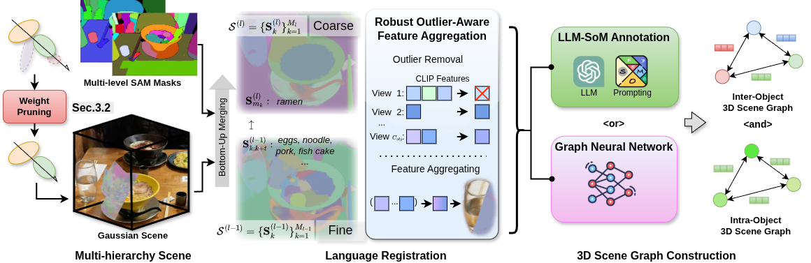
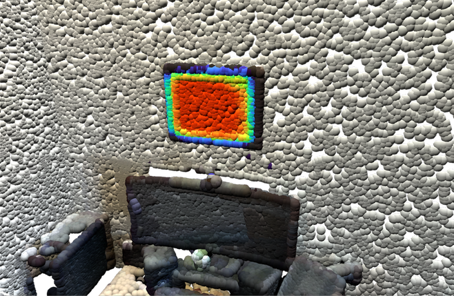
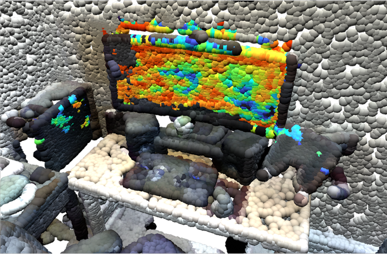

Achieving unified 3D perception and reasoning across tasks such as segmentation, retrieval, and relation understanding remains challenging, as existing methods are either object-centric or rely on costly training for inter-object reasoning.
We present a novel framework that constructs a hierarchical language-distilled Gaussian scene and its 3D semantic scene graph without scene-specific training. A Gaussian pruning mechanism refines scene geometry, while a robust multi-view language alignment strategy aggregates noisy 2D features into accurate 3D object embeddings. On top of this hierarchy, we build an open-vocabulary 3D scene graph with Vision Language-derived annotations and Graph Neural Network-based relational reasoning.
Our approach enables efficient and scalable open-vocabulary 3D reasoning by jointly modeling hierarchical semantics and inter/intra-object relationships, validated across tasks including open-vocabulary segmentation, scene graph generation, and relation-guided retrieval.

ReLaGS Overview. Given a reconstructed Gaussian scene, redundant primitives are first pruned to improve geometric accuracy. Heuristic clustering under multi-level SAM supervision then forms a hierarchical scene structure, where each cluster is assigned a CLIP-based language feature with outlier rejection. Finally, open-vocabulary inter- and intra-object scene graphs are obtained either by lifting LLM-derived relations for semantic diversity or by using a pretrained graph network for efficient offline inference.
We evaluate open-vocabulary retrieval on fine-grained and part-level queries. For multi-instance queries, OpenGaussian retrieves only a subset of instances while THGS and ReLaGS both recover the full set. The key distinction emerges on part-level queries — “pirate hat” and “kamaboko” — where all baselines fail entirely and only ReLaGS succeeds.
Original scene
Original scene
We evaluate relational queries that require understanding spatial relationships between objects. In the disambiguation scene, both queries differ only in their relational context — ReLaGS correctly retrieves a different towel for each query, while THGS ignores the relation and returns the same object both times. In the general scene, THGS either conflates objects with their surroundings or returns nothing meaningful, while RelationField’s voxel-based activations highlight only a partial region of the correct object.
Original scene
Two towels present. Each query should retrieve a different one.
Original scene

partial region
partial regionWe compare resource usage against RelationField — the closest method to ours in capability. ReLaGS injects structured semantic representation into a Gaussian scene with less than 25% memory overhead, while being substantially faster to train and leaner on disk.
* Values from Tab. 7. Resource usage is decomposed across the three stages of ReLaGS. Ablation studies on GNN design, pruning quality, and scene graph prediction are in the appendix.
This work has been partially funded by the EU projects dAIEDGE (GA Nr 101120726) and LUMINOUS (GA Nr 101135724).
@inproceedings{xiearafa2026relags,
title = {ReLaGS: Relational Language Gaussian Splatting},
author = {Xie, Yaxu and Arafa, Abdalla and Javanmardi, Alireza and
Millerdurai, Christen and Hu, Jia Cheng and Wang, Shaoxiang and
Pagani, Alain and Stricker, Didier},
booktitle = {CVPR},
year = {2026}
}